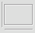
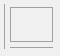

Separator Item
A separator item is a line that separates controls from each other or a frame that groups controls together in a dialog or tab page. There are three types of separator items: horizontal separator line, vertical separator line and separator rectangle.
If you want to group controls and label the group with a text, use a group box instead of the combination of a separator rectangle and a static text.
Separator items are the simplest controls in DG. They can not have the input focus and do not accept any user input.
-
 
Item type
- DG_ITM_SEPARATOR
Subtypes
-
Subtype Meaning DG_SP_HORIZONTAL Horizontal separator line. DG_SP_VERTICAL Vertical separator line. DG_SP_RECT Separator rectangle.
GRC Specification
Separator x y dx dy
where x and y are the pixel coordinates of the upper left corner of the separator item, dx and dy are the width and height of the control in pixels.
Remarks
When a separator item is created from GRC or from program code, DG determines its type from the specified horizontal and vertical sizes. If both sizes are greater than 3 pixels DG creates a separator rectangle. If only the horizontal or the vertical size is greater than 3 pixels DG creates a horizontal or a vertical separator line, respectively.
 Windows only:
Windows only:
- If a lot of controls have to be moved by the same horizontal and vertical pixel values, it is advised to group them by a separator rectangle. If the controls are grouped this way they are moved more smoothly, especially when the full drag mode is set.
Requirements
- Version: DG 1.0.0 or later
- Header: DG.h